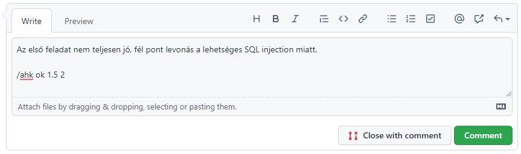

Laborvezetőknek¶
Webes Laborvezető/demonstrátor lennél? Az alábbiakat érdemes tudnod.
Laborvezető feladatai¶
A laborvezető a tárgy oktatásában segít a webes laborok megtartása és a számonkérések során. A feladat 2022 ősszel az alábbiakból áll.
Félév során összesen 6 darab labor személyes megtartása. Ez a szám felszorzódhat ha több csoportot vállalsz egy héten. Ez a személyes labor fix órarendi időben van, 2*45 perces, és számítógép laborban tartjuk. A személyes laborok részben vezetettek kiadott segédlet alapján, részben pedig hallgatói önálló munkából állnak. A laborvezető feladata a laborra való felkészülés, a labor megtartása, ennek során a szükséges háttérismeretek rövid átismétlése, és a hallgatók segítése a labor során.
2022 őszi félév során a laborok órarendi időpontjai:
TBD
Otthon teljesített laborok során segítségnyújtás. A személyes laborok mellett csoportonként van 3 darab otthon elvégzett labor, amit a hallgatók házi feladatként önállóan teljesítenek egy-egy kéthetes időablakon belül. Ennek során, ha szükséges, a laborvezető segítséget nyújt a hallgatóknak kérdés és probléma esetén.
Labor feladatok értékelése. A félév során csoportonként összesen 6 webes labor van, mindegyiket jeggyel értékeljük. A laborok beadása GitHub pull request-ek formájában történik. A laborok kiértékelése részben automatikusan történik: egy szoftver lefuttatja és ellenőrzi a beadott munkát, ahol ez lehetséges. A laborvezető feladata a beadott házi feladat formai ellenőrzése: kért képernyőképek megfelelnek-e az előírásoknak és konzisztensek-e a beadott forráskóddal.
Demonstrátorság¶
Hallgató vagy de szeretnél bekapcsolódni az oktatásba? Szeretnéd kipróbálni magad laborvezetőként? Szeretsz magyarázni? Elvégezted ezt a tárgyat ötössel? Várunk demonstrátorként!
A TVSZ pár követelményt szab demonstrátoroknak: (lásd aktuális TVSZ 165.§):
(5) A demonstrátori pályázat benyújtásának feltétele, hogy a pályázó
a) a demonstrátori jogviszonnyal érintett félévben rendelkezzen aktív hallgatói jogviszonnyal;
b) rendelkezzen alapképzésben vagy osztatlan képzésben szerzett oklevéllel;
c) alapképzésben vagy osztatlan képzésben szerzett oklevél hiányában rendelkezzen legalább annyiszor huszonöt teljesített kredittel, ahány lezárt aktív féléve van és halmozott súlyozott tanulmányi átlageredménye haladja meg a 3,50 értéket; és
d) ne álljon fegyelmi büntetés hatálya alatt.
Ha érdekel a lehetőség, megfelelsz a fenti követelményeknek, és az órarendedbe belefér a labor (lásd az időpontokat fentebb), keresd a tárgyfelelőst.
Tudnivalók a laborok megtartásához¶
A tárgy alapképzés (BSc) 5. félévében kötelező tárgy. Ezt azt jelenti, hogy a hallgatók szoftverfejlesztési alapismeretekkel rendelkeznek, mivel a megelőző félévben teljesítették a Szoftvertechnikák c. tárgyat. A tárgyunk célja a webes tudás alapszintű ismereteinek megismerése és gyakorlása. A laborok során új technológiákkal foglalkozunk.
Oktatás módja¶
A laborokon elvárt a részvétel, de ezt is be lehet fejezni otthon. Minden laboron általában az elégséges szintig vezetett, ezen felül önálló munkát várunk el, és az elvégzett munka osztályzásra kerül. A laborok anyaga jelöli, mi a közös munka. A laborvezető segít elindulni a feladatokkal, átbeszélve a közös feladatokat, majd a hallgatók utána önállóan dolgoznak. Mivel a labor feladatok megoldására jegyet adunk, elvárjuk a hallgatótól az önálló munkavégzést.
Adminisztratív tudnivalók¶
- A személyes laborokat óra 15-kor kezdjük pontosan és a 2*45 percet egyben, szünet nélkül tartjuk. A késő hallgatókat első alkalommal figyelmeztessük. Ha többször előfordul vagy zavaróan sokat késik (>5 perc), akkor küldjétek el (TVSZ erre jogot ad!).
- A laborok elején Moodle teszt formájában beugró vagy kisZH íratandó, aminek a tisztaságát felügyelni kell. Nem használható segédanyag, és önálló munka az elvárt.
- A labor teljesítésének adminisztrálása Moodle-ben történik. Személyes labor esetén a teljesítés a laboron való megjelenést, és a munka veletek történő elvégzését jelenti, majd a végső munka beadását. Tehát személyes labor esetén a hallgató nem sétálhat ki a labor közepén és nem foglalkozhat mással, csak a laborral. Eseti problémákat azért kezeljünk le, pl. ZH-ja van máshol, stb. Egy-egy kivétel belefér. A beugró/kisZH egyben jelenlét is, viszont ellenőrizni kell, hogy ne legyen olyan hallgató, aki távolról írta meg a Moodle tesztet.
- Ha az órán több ember jelenne meg, mint ahány gép van (hiányzás pótlása pl.), vagy egy gép nem működik, akkor akinek nem jut hely, leül valaki mellé.
- A csoportok között nincs ad-hoc átjárás. Ha valaki jelzi, hogy nem tud részt venni egy laboron, akkor előre/utólag/ugyanazon a héten egy másik csoportban pótolhat (ha van rá mód). Ennek a megszervezését alapvetően a hallgató bonyolítsa (nézze meg, mikor van még labor azonos anyagból, és egyeztessen a tárgyfelelőssel, vagy a laborvezetőkkel), de segítsük, ha kell.
Anyagok elérhetősége¶
- A tárgy webes laborjainak minden anyaga ezen az oldalon érhető el. Ha hibát, elgépelést találsz benne, arra kérünk, hogy javítsd: minden anyag jobb felső sarkában van egy kis ceruza ikon, javítsd a hibát, és küldj PR-t.
Belépések¶
A labor termekhez kulcsra és/vagy kártyára van szükség. Ezeket a titkárságon (QB207) kell kérni. I épülethez kell a teremkulcs, ill. a folyosóhoz szükség van kártyára is (kivéve, akinek van ilyenje). Q épület laborjaihoz hozzáférést külön szervezzük. Demonstrátorok: mindezt megmutatom első alkalommal.
Gépekre: emailben küldöm félév elején. Kis- és nagybetű számít! Pár elgépelés után le lesz tiltva az account!
Beadott labor megoldás értékelése¶
A laborok megoldását adott határidőig kell beadni GitHub-on. Ennek pontos menete a hallgató szemszögéből itt elolvasható.
Ahhoz, hogy hozzáférj a GitHub-on a beadott megoldásokhoz (és ahhoz, hogy a hallgatók ezt hozzád tudják rendelni), kell egy GitHub account. A GitHub nevedet írd meg a tárgyfelelősnek, és felvesz GitHub-on a https://www.github.com/viauac00 organization-be.
Mikor kell értékelni a labort?¶
A laborokat a határidő lejárta után kell értékelni. A határidő előtt a megoldásokra nem kell ránézni, kivéve, ha ezt a hallgató kéri. Kérdéssel a hallgató direktben kell megkeressen (pl. emailben vagy GitHub-on).
Hol kell értékelni a labort?¶
A határidő lejárta után a feladatod a hozzád rendelt pull request-ek értékelése. A hallgató azzal adja be a labort, hogy a pull request-et a laborvezetőjéhez rendeli. Ezeket a GitHub keresőjével a legegyszerűbb megtalálni: https://github.com/pulls?q=is%3Aopen+is%3Apr+org%3Abmeviauac01+assignee%3A%40me+.
Alternatívaként a GitHub értesítő felületét is lehet használni a https://github.com/notifications címen, itt minden hozzád rendelt, vagy review-ra váró PR megjelenik.
Hogyan kell értékelni a labort?¶
A PR-eket egyesével kell megnyitni, és meg kell nézni a PR komment felületén az eredményt. Itt látható lesz a lefuttatott értékelés eredménye, valamint a képernyőképek. Emellett meg kell nézni a forráskódot is.

Automatikus értékelés esetén (ami nem minden labornál van) a forráskódot nem szükséges betűről betűre megnézni - a részletes ellenőrzést elvégzi az automata. A laborvezető feladata a képernyőképek ellenőrzése, valamint annak eldöntése, hogy a forráskód konzisztens-e a kapott eredménnyel, és nincs-e benne olyan kódrészlet, amely ugyan működik, de kifejezetten rosszul oldja meg a problémát. Amely labornál nincs automata értékelés, ott több munka hárul a laborvezetőre, alaposabban meg kell nézni a megoldást.
A feladatok minta megoldása itt érhető el: https://github.com/viauac00?q=labor-megoldas. Ezek csak lehetséges megoldások, a hallgató megoldása nem kell ezzel egyezzen.
Az értékelés végeztével:
- Ha az automata értékelés helyénvaló volt, akkor le kell zárni a PR-t a
/ahk okparancs beírásával egy kommentbe. Ennek hatására a PR jóváhagyásra kerül és merge-elve lesz. - Ha az automata értékelést felülbírálod pontszámban, akkor a
/ahk ok 5 2parancsot kell kiadni, ahol is az első szám az összes nem iMSc feladatra kapott pontszám összege, a második szám pedig az iMsc feladatra kapott pontszám. Az utóbbi szám elhagyható, ha nincs megoldva az iMsc feladat. - Ha nincs automata értékelés, akkor az előbbi szintaktika szerint ki kell adni a
/ahk ok 5 2parancsot a megfelelő pontszámokkal. - Ha a beadott megoldás nem fogadható el (határidőn túl érkezett, a képek nem támasztják alá a megoldást, a forráskód elfogadhatatlan, stb.), akkor ki kell adni a
/ahk ok 0 0parancsot. Ezzel fogjuk rögzíteni, hogy az automata értékelő által adott pontszámokat felülírjuk.
A fenti parancs egy kommentben tetszőleges helyen szerepelhet, amennyiben egy sorban csak ez a parancs szerepel. Írhatunk tehát a hallgatónak megjegyzést, majd utolsó sorba írjuk ezt a parancsot. Érdemes a hallgatónak legalább egy mondatot írni, hogy lássa, elfogadtuk a megoldást. Ha még sincs megjegyzésünk a hallgató felé, akkor csak egysoros komment kell ezzel a paranccsal.

A parancs többször is kiadható, tehát elrontott pontszámot lehet javítani az újbóli kiadással.
A parancs hatását látjuk is utána PR-ben:
- a kommentre a parancs felismerésének megerősítésére érkezik egy reakció,
- a PR változtatásai jóváhagyásra kerülnek (ez szükséges a mergeléshez a protected branch miatt),
- a a PR mergelésre kerül - ezzel lezárt állapotba kerül a PR és így eltűnik a teendők listájáról,
- és végül elmentésre kerül az eredmény a háttérben - ezt már közvetlenül nem látjuk.

Problémák és megoldásuk¶
Nem futott le az automata értékelés.
- Lehet, hogy a hallgató draft módban hagyta a PR-t, ezt vissza kell állítani. A PR alján megjelenik ilyenkor egy Ready for review gomb.
- Ha sikertelen volt a kiértékelés, meg lehet ismételni. Ez segít a tranziens hibákon (ritka eset). Ehhez tegyél egy eval nevű labelt-t a PR-re (új label-ként kell létrehozni).
Több, mint 5-ször futott a kiértékelés. Ezt pontlevonással szankcionáljuk. Első alkalommal eltekinthetünk tőle, de mindenképpen tájékoztassuk a hallgatót.
Hiba van a kiértékelő alkalmazásban. Előfordulhat. Keresd a tárgyfelelőst, vagy javítsd a hibát (a kiértékelő programok itt vannak: TBD).